Curso de Google Documentos › Insertar › Lección 26
Lección 26 de 53 · menú Insertar
Cómo escribir ecuaciones en Google Docs
Fecha del video: · Programado
¿Necesitás escribir fórmulas en Google Docs? Con Insertar → Ecuación aparece un cuadro de ecuación y, arriba, la barra de ecuaciones, con letras griegas, operadores, relaciones y flechas. Acá lo vemos paso a paso.
En el ejemplo usamos el documento «Lista de compras»: le escribimos la fórmula del área del círculo, A = πr², y una α con el atajo; al final las borramos, así el documento quedó como estaba.
Paso 1: Insertar → Ecuación
Poné el cursor donde querés la fórmula. Arriba, en la barra de menús, tocá Insertar y elegí Ecuación (con el ícono π²). Está directo en el menú, justo debajo de Símbolos.
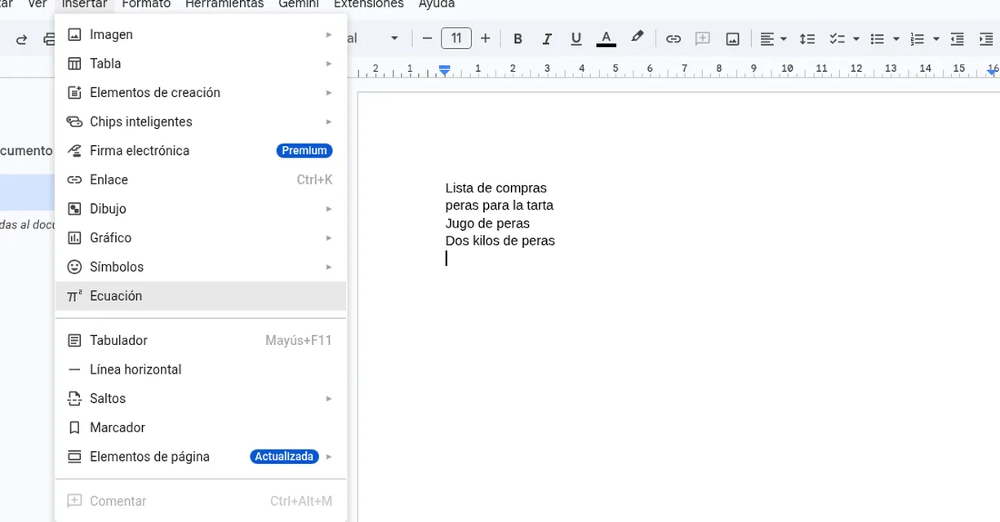
Paso 2: el cuadro y la barra de ecuaciones
En el texto aparece un cuadro de ecuación con el cursor adentro, y debajo de la barra de herramientas aparece la barra de ecuaciones: el botón Nueva ecuación y cinco menús de símbolos. Según la ayuda de Google son Letras griegas, Otras operaciones, Relaciones, Operadores de matemática y Flechas (en pantalla se ven solo con sus íconos: αβΔ, ×÷∃, <≠⊃, √()x y ←↑⇔).
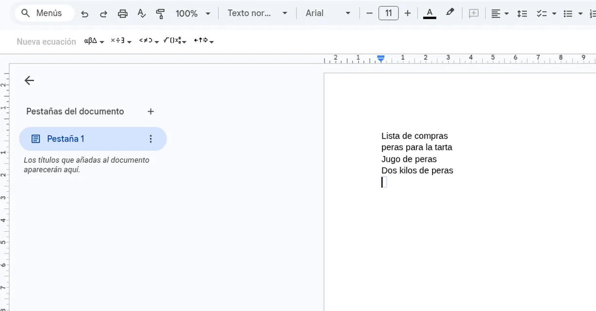
Paso 3: escribí y agregá símbolos
Escribí en el cuadro (en el ejemplo, A =). Para agregar un símbolo, abrí su menú: en Letras griegas (αβΔ) tocamos π.
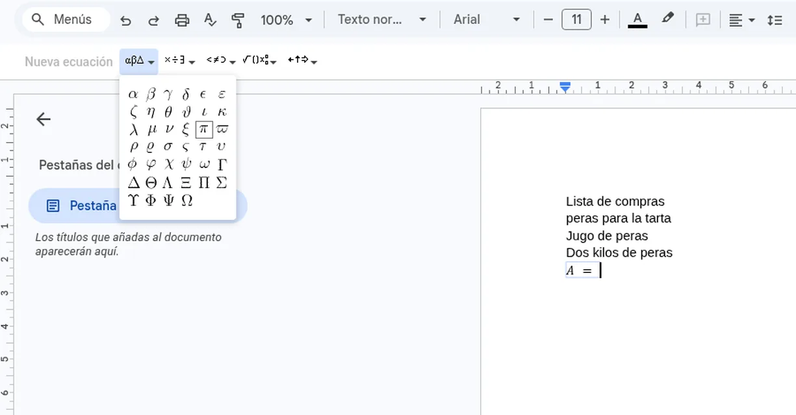
El símbolo queda dentro del cuadro: «A = π».
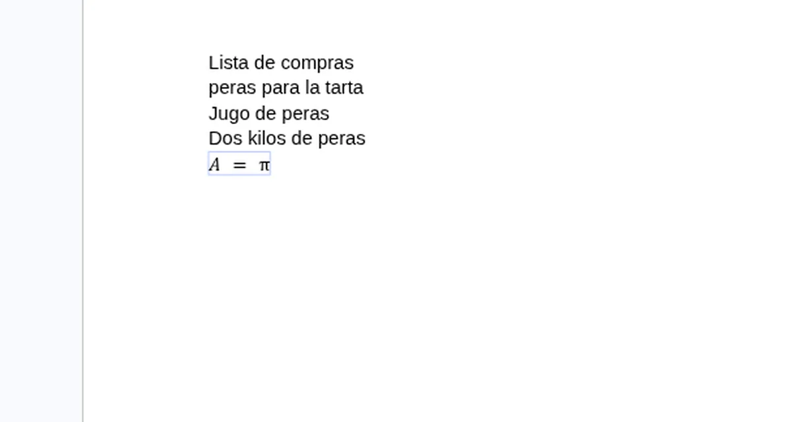
Paso 4: el superíndice (r²)
Escribí r. El superíndice está en el menú Operadores de matemática (√()x), pero lo más rápido es escribir el signo de potencia ^ (el «gorrito») y después el 2. Con la flecha derecha del teclado salís del superíndice.
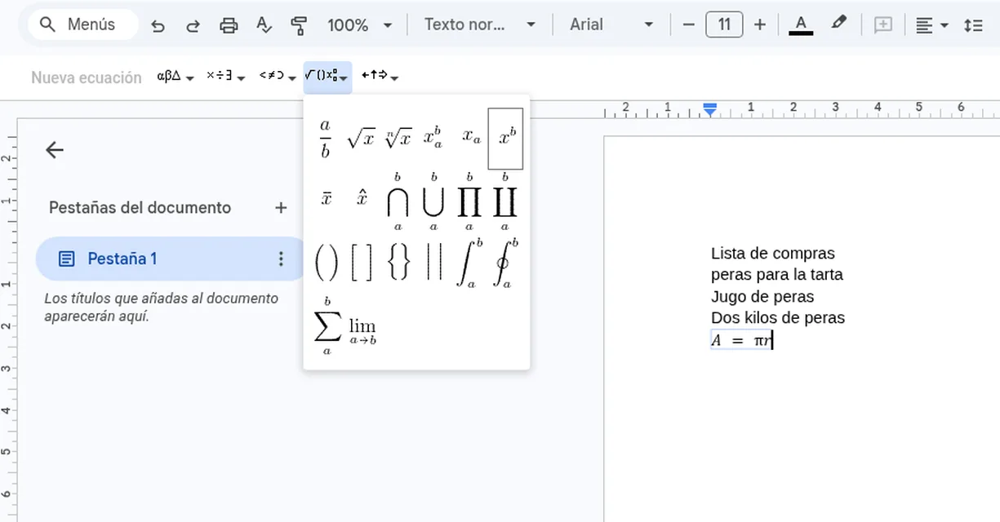
Así queda la fórmula completa: A = πr².
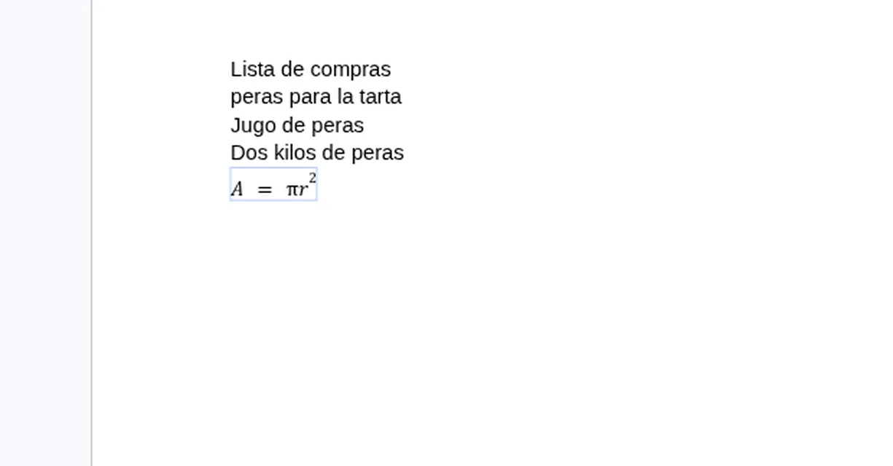
Paso 5: «Nueva ecuación» para otro cuadro
Para agregar otro cuadro de ecuación, hacé clic en Nueva ecuación, a la izquierda de la barra. El cuadro nuevo aparece donde está el cursor (en el ejemplo, al lado del primero).
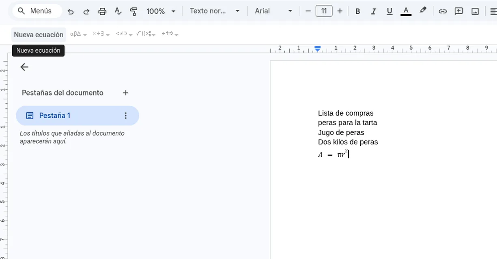
Paso 6: el atajo de la barra invertida
Si sabés el nombre del símbolo, escribí la barra invertida \, el nombre y un espacio. En el ejemplo escribimos \alpha…
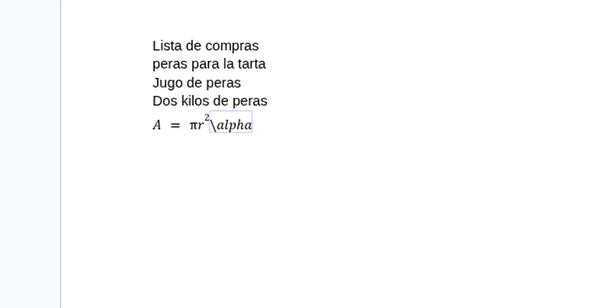
…y al apretar espacio se convirtió en α.
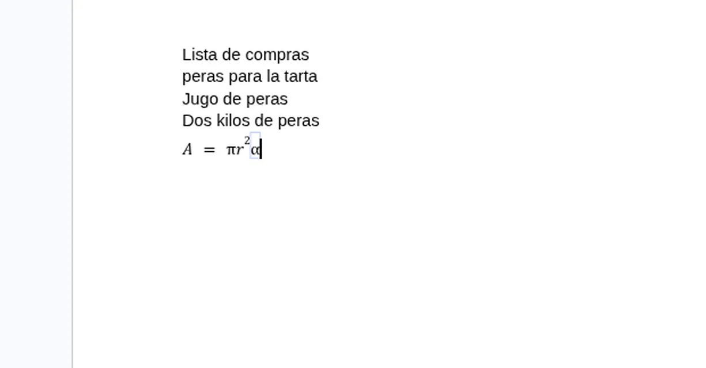
Paso 7: mostrar u ocultar la barra
Para mostrar u ocultar la barra de ecuaciones, andá a Ver → Mostrar la barra de herramientas de ecuaciones. Con tilde, la barra se ve; sin tilde, queda oculta.
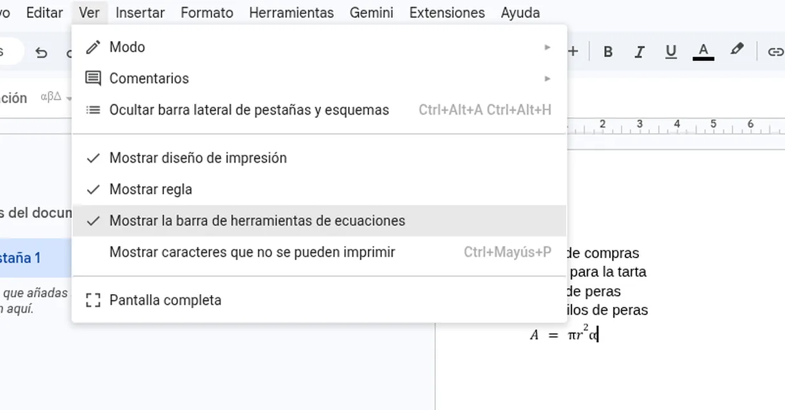
Al final borramos las ecuaciones y el documento quedó como al principio.
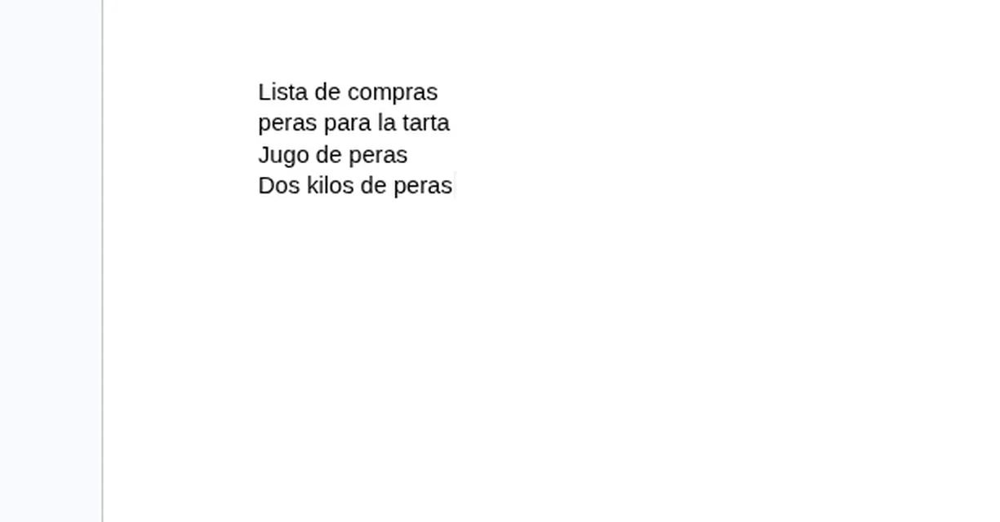
Fuente oficial: Usar ecuaciones en un documento. Mirá también el menú Insertar completo (video: Google Docs: menú Insertar paso a paso) y la lección anterior, Emoji y caracteres especiales.
Mirá el Short
Estreno del Short: 04/12/2026 · 17:00 (hora Argentina)
Video relacionado: Google Docs: menú Insertar paso a paso (tutorial completo) — el video largo del menú Insertar (verlo en YouTube).
Fuente oficial: Ayuda de Editores de Documentos de Google. Capturas propias en un documento de ejemplo («Lista de compras»). El video usa voz generada con IA.